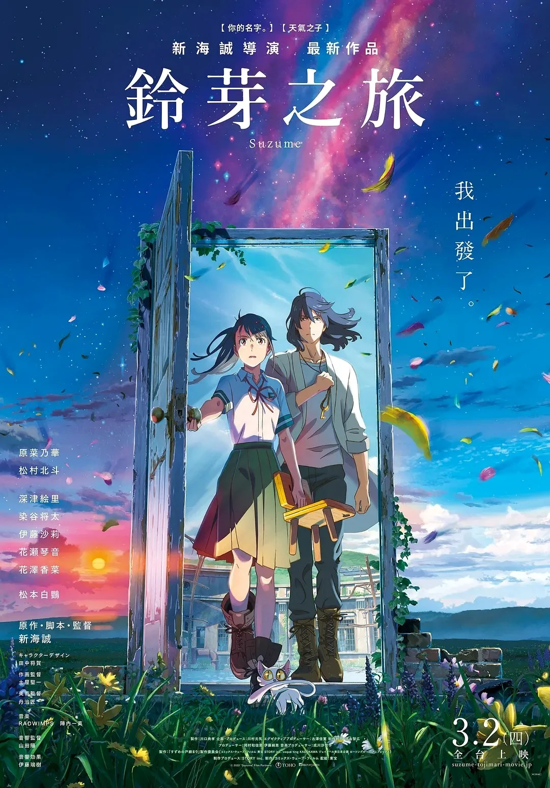
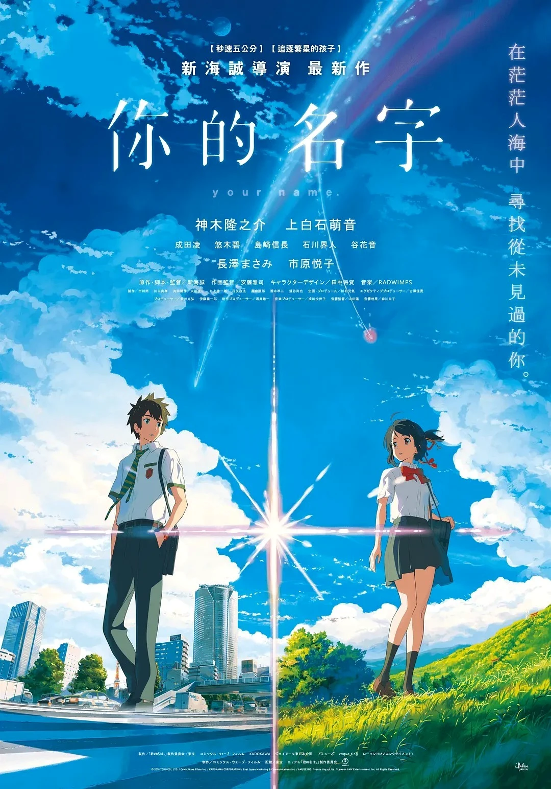
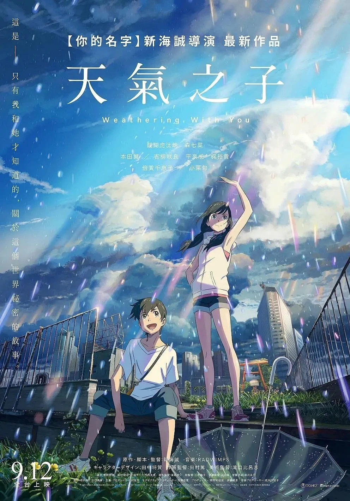
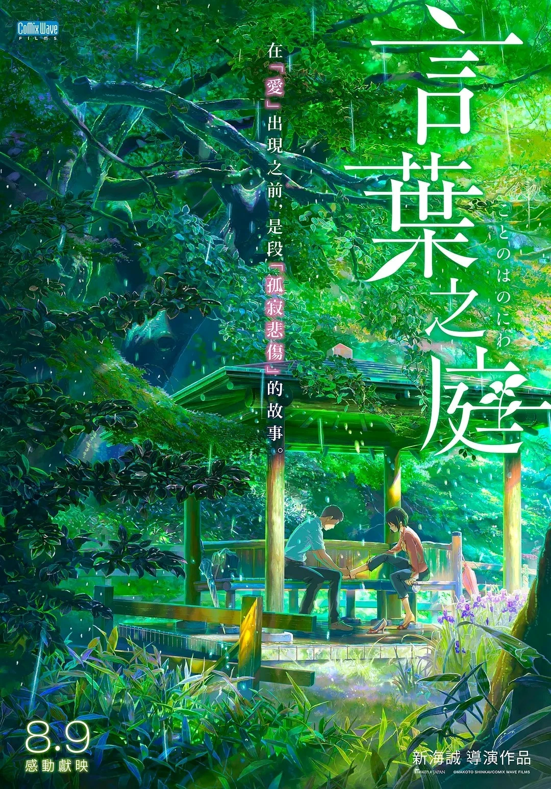
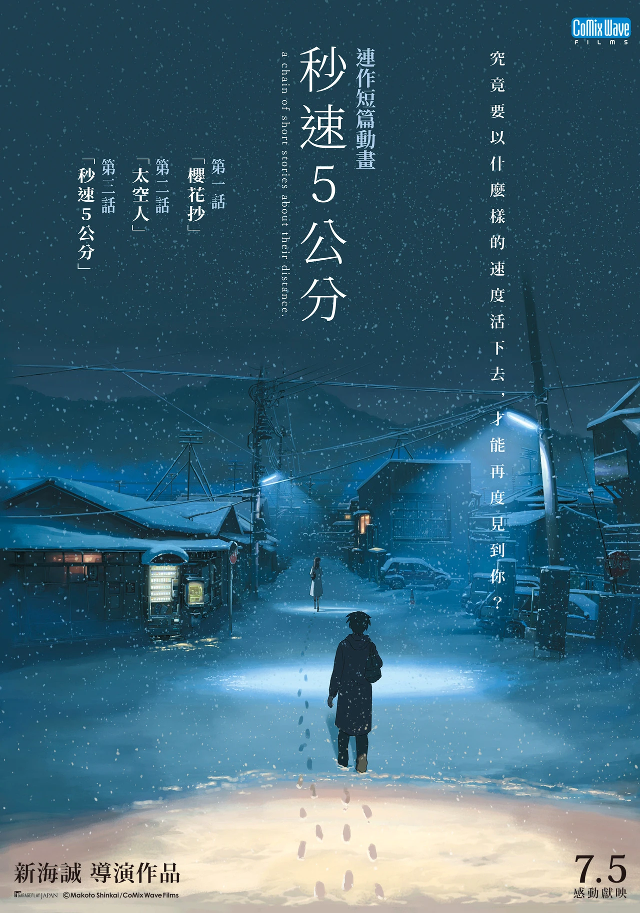

2022
鈴芽之旅
少女踏上關門之旅，在相遇與告別之間，學會擁抱明天。
A LIFE IN STORIES
新海誠是日本動畫導演、編劇與動畫製作者。從早期獨立創作出發，他以真摯的情感與獨特的影像語言，逐步走進更多觀眾的心中。
他的故事常從日常生活開始，讓相隔兩地的人在天空、季節與時間之中，尋找彼此，也重新理解自己。
SELECTED FILMS
五段故事，五種天空。
在各自的旅程裡，遇見心中珍藏的風景。

少女踏上關門之旅，在相遇與告別之間，學會擁抱明天。

在夢境交錯的時空裡，兩個陌生人追尋命運的連結。

晴天少女與離家少年，在雨不停歇的城市裡選擇相信。

雨季庭園的短暫相逢，讓兩顆心慢慢找到前行的方向。

櫻花飄落的速度，映照著距離與思念在歲月中的變化。
THE WAY HE TELLS
把平凡的瞬間，拍成心裡的遠方。
日常的通勤、擦肩而過的目光、遲遲未寄出的話語，在新海誠的作品裡都成為情感的入口。角色在距離中思念，在困境中相遇，最後帶著微小卻堅定的希望繼續前進。
即使看不見彼此，
也仍在同一片天空之下。
A SKY FULL OF FEELING
光落下的地方，故事便有了溫度。
雲層的透亮、雨滴的反光、城市暮色裡的微光——精細而富有層次的背景，讓日常景色也像一場夢。冷暖色彩與光線的流動，則悄悄說出角色無法言明的心情。